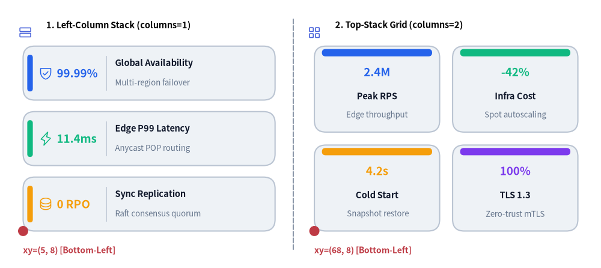
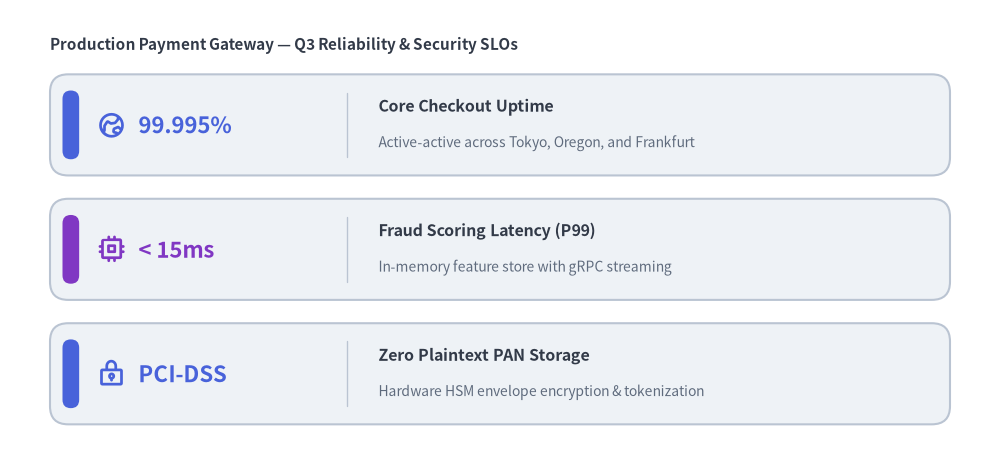
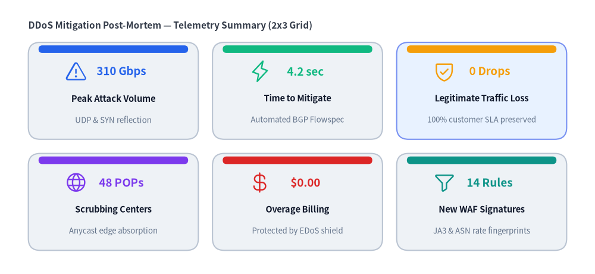

KpiCards
The KpiCards component (also aliased as KpiCard) renders metric highlight cards that pair a prominent headline number or status token (metric) with a structured card title (text), supporting description, optional vector icon, and accent indicator ("left_pill", "top_bar", or "none").
It supports both vertical stacks (columns=1) and multi-column dashboard grids (columns=2..N), making it ideal for SLA targets, benchmark summaries, and executive KPI overviews.

Source Code
from drawlib.canvas import save, setup
from drawlib.icons import phosphor
from drawlib.lines import line
from drawlib.shapes import circle
from drawlib.smartarts import KpiCards
from drawlib.styles import Styles
from drawlib.text import text
setup(width=130, height=58)
# Subtle center divider
line((63.5, 4.0), (63.5, 54.0), style=Styles.MutedDashed)
# 1. Left Panel: Vertical Stack (metric_layout="left_column", accent_position="left_pill")
phosphor.rows(xy=(5.5, 51.0), width=3.4, style=Styles.PrimaryFlat)
text((10.0, 52.5), "1. Left-Column Stack (columns=1)", style=Styles.BlackBold.patch(text_size=10.5, halign="left"))
kpi_stack = KpiCards(
style=Styles.Neutral,
metric_style=Styles.PrimaryBold.patch(text_size=15.0),
text_style=Styles.DarkBold.patch(text_size=11.0),
description_style=Styles.Muted.patch(text_size=9.5),
accent_style=Styles.PrimaryFlat,
icon_style=Styles.PrimaryBold,
accent_position="left_pill",
metric_layout="left_column",
metric_width_ratio=0.30,
spacing=2.5,
)
kpi_stack.add("99.99%", "Global Availability", "Multi-region failover", icon=phosphor.shield_check)
kpi_stack.add(
"11.4ms",
"Edge P99 Latency",
"Anycast POP routing",
icon=phosphor.lightning,
metric_style=Styles.AccentBold.patch(text_size=15.0),
accent_style=Styles.AccentFlat,
icon_style=Styles.AccentBold,
)
kpi_stack.add("0 RPO", "Sync Replication", "Raft consensus quorum", icon=phosphor.database)
kpi_stack.draw(xy=(5.0, 8.0), width=54.5, height=40.0, columns=1)
circle((5.0, 8.0), radius=1.1, style=Styles.DangerFlat)
text((5.0, 3.8), "xy=(5, 8) [Bottom-Left]", style=Styles.DangerBold.patch(text_size=10.0, halign="left"))
# 2. Right Panel: 2x2 Dashboard Grid (metric_layout="top_stack", accent_position="top_bar")
phosphor.squares_four(xy=(68.0, 51.0), width=3.4, style=Styles.PrimaryFlat)
text((72.5, 52.5), "2. Top-Stack Grid (columns=2)", style=Styles.BlackBold.patch(text_size=10.5, halign="left"))
kpi_grid = KpiCards(
style=Styles.Neutral,
metric_style=Styles.PrimaryBold.patch(text_size=16.0),
text_style=Styles.DarkBold.patch(text_size=11.0),
description_style=Styles.Muted.patch(text_size=9.5),
accent_style=Styles.PrimaryFlat,
accent_position="top_bar",
metric_layout="top_stack",
spacing=2.8,
)
kpi_grid.add("2.4M", "Peak RPS", "Edge throughput")
kpi_grid.add(
"-42%",
"Infra Cost",
"Spot autoscaling",
metric_style=Styles.AccentBold.patch(text_size=16.0),
accent_style=Styles.AccentFlat,
)
kpi_grid.add("4.2s", "Cold Start", "Snapshot restore")
kpi_grid.add("100%", "TLS 1.3", "Zero-trust mTLS")
kpi_grid.draw(xy=(68.0, 8.0), width=57.0, height=40.0, columns=2)
circle((68.0, 8.0), radius=1.1, style=Styles.DangerFlat)
text((68.0, 3.8), "xy=(68, 8) [Bottom-Left]", style=Styles.DangerBold.patch(text_size=10.0, halign="left"))
save()
1. Vertical Metric Stack with Left-Column Layout (metric_layout="left_column")
When metric_layout="left_column" (the default), each card reserves its left column (metric_width_ratio) for the large headline metric and places the card title (text) and description on the right, with an optional vector icon anchored on the far right of the card.
from drawlib.canvas import save, setup
from drawlib.icons import phosphor
from drawlib.smartarts import KpiCards
from drawlib.styles import Styles
from drawlib.text import text
setup(width=120, height=56)
text((6.0, 50.5), "Production Payment Gateway — Q3 Reliability & Security SLOs", style=Styles.DarkBold.patch(text_size=11.0, halign="left"))
slo_cards = KpiCards(
style=Styles.Neutral,
metric_style=Styles.PrimaryBold.patch(text_size=16.0),
text_style=Styles.DarkBold.patch(text_size=11.5),
description_style=Styles.Muted.patch(text_size=10.0),
accent_style=Styles.PrimaryFlat,
icon_style=Styles.PrimaryBold,
accent_position="left_pill",
metric_layout="left_column",
metric_width_ratio=0.28,
spacing=2.8,
)
slo_cards.add(
"99.995%",
"Core Checkout Uptime",
"Active-active across Tokyo, Oregon, and Frankfurt",
icon=phosphor.globe_hemisphere_east,
)
slo_cards.add(
"< 15ms",
"Fraud Scoring Latency (P99)",
"In-memory feature store with gRPC streaming",
icon=phosphor.cpu,
metric_style=Styles.AccentBold.patch(text_size=16.0),
accent_style=Styles.AccentFlat,
icon_style=Styles.AccentBold,
)
slo_cards.add(
"PCI-DSS",
"Zero Plaintext PAN Storage",
"Hardware HSM envelope encryption & tokenization",
icon=phosphor.lock_key,
)
slo_cards.draw(xy=(6.0, 5.0), width=108.0, height=42.0, columns=1)
save()

2. Multi-Column Dashboard Grid & Custom Highlighting (columns=2..N)
Combining metric_layout="top_stack" and accent_position="top_bar" with columns >= 2 arranges cards into a multi-column row-major grid. You can override style, metric_style, text_style, or accent_style on individual items (or mutate kpi.items[i] after registration) to highlight specific focal metrics.
from drawlib.canvas import save, setup
from drawlib.icons import phosphor
from drawlib.smartarts import KpiCards
from drawlib.styles import Styles
from drawlib.text import text
setup(width=126, height=58)
text((6.0, 52.5), "DDoS Mitigation Post-Mortem — Telemetry Summary (2x3 Grid)", style=Styles.DarkBold.patch(text_size=11.0, halign="left"))
grid = KpiCards(
style=Styles.Neutral,
metric_style=Styles.PrimaryBold.patch(text_size=15.0),
text_style=Styles.DarkBold.patch(text_size=11.0),
description_style=Styles.Muted.patch(text_size=9.5),
accent_style=Styles.PrimaryFlat,
icon_style=Styles.PrimaryBold,
accent_position="top_bar",
metric_layout="top_stack",
spacing=3.0,
)
grid.add(
"310 Gbps",
"Peak Attack Volume",
"UDP & SYN reflection",
icon=phosphor.warning,
metric_style=Styles.DangerBold.patch(text_size=15.0),
accent_style=Styles.DangerFlat,
icon_style=Styles.DangerBold,
)
grid.add("4.2 sec", "Time to Mitigate", "Automated BGP Flowspec", icon=phosphor.lightning)
grid.add(
"0 Drops",
"Legitimate Traffic Loss",
"100% customer SLA preserved",
icon=phosphor.shield_check,
style=Styles.PrimaryNeutral,
)
grid.add("48 POPs", "Scrubbing Centers", "Anycast edge absorption", icon=phosphor.globe)
grid.add("$0.00", "Overage Billing", "Protected by EDoS shield", icon=phosphor.currency_dollar)
grid.add("14 Rules", "New WAF Signatures", "JA3 & ASN rate fingerprints", icon=phosphor.funnel)
grid.draw(xy=(6.0, 5.0), width=114.0, height=44.0, columns=3)
save()

3. Layout Modes & Coordinate Geometry
- Bottom-Left Anchor (
xy):KpiCards.draw(xy=(x, y), width=W, height=H, columns=C)anchors the bottom-left corner of the overall bounding box at(x, y)and extendsWunits rightward (+x) andHunits upward (+y). - Row-Major Grid Ordering: When
columns > 1, items are placed from top row to bottom row, left to right, soitems[0]appears at the top-left of the bounding box. - Accent Positions (
accent_position):"left_pill"(default): Draws a vertical rounded accent bar inside the left edge of each card (accent_stylerequired)."top_bar": Draws a horizontal accent bar along the top edge of each card (accent_stylerequired)."none": Omits the accent bar for a clean border-only card.
- Metric Layouts (
metric_layout):"left_column"(default): Splits each card horizontally into a left metric zone (metric_width_ratio, default0.28) and a right title/description/icon zone. Best forcolumns=1or widecolumns=2layouts."top_stack": Stacks the large metric centered in the upper half of the card with the title (text) anddescriptioncentered below. Best for compact multi-column grids (columns=2or3).
4. API Reference
Constructor
KpiCards(
*,
style: Style,
metric_style: Style,
text_style: Style,
description_style: Style | None = None,
accent_style: Style | None = None,
icon_style: Style | None = None,
accent_position: Literal["left_pill", "top_bar", "none"] = "left_pill",
metric_layout: Literal["left_column", "top_stack"] = "left_column",
metric_width_ratio: float = 0.28,
spacing: float = 3.0,
)
(Alias: KpiCard is exported from drawlib.smartarts as an alias for KpiCards.)
Methods & Properties
add(metric: str, text: str, description: str = "", *, style: Style | None = None, metric_style: Style | None = None, text_style: Style | None = None, description_style: Style | None = None, accent_style: Style | None = None, icon: Callable | None = None, icon_style: Style | None = None, show: bool = True) -> KpiCardItem: Registers a metric card item (textis the primary card title) and returns a mutableKpiCardItem. Settingitem.show = Falseskips rendering that card while keeping all other cards' grid positions and dimensions fixed.kpicards.items -> list[KpiCardItem]: Returns the list of registeredKpiCardIteminstances for deferred style/text/visibility mutation.draw(xy: tuple[float, float], width: float = 100.0, height: float = 60.0, *, columns: int = 1, scale: float = 1.0) -> Self: Renders all visible cards inside the(width, height)bounding box anchored at bottom-leftxy.